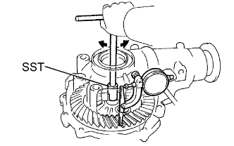
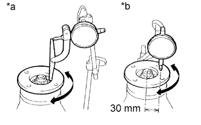
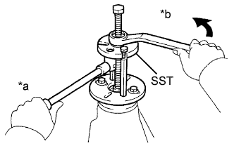
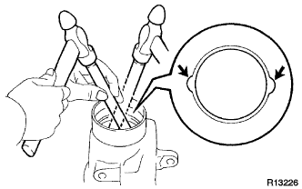
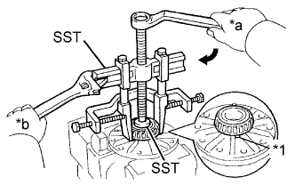

FRONT DIFFERENTIAL CARRIER ASSEMBLY > DISASSEMBLY |
| 1. INSPECT DIFFERENTIAL RING GEAR BACKLASH |
|  |
Using SST and a dial indicator, measure the ring gear backlash.
| 2. INSPECT FRONT DRIVE PINION COMPANION FLANGE SUB-ASSEMBLY |
|  |
Using a dial indicator, measure the runout of the companion flange vertically and laterally.
| Item | Specified Condition |
| Vertical runout | 0.15 mm (0.00591 in.) |
| Lateral runout | 0.15 mm (0.00591 in.) |
| *a | Vertical Runout |
| *b | Lateral Runout |
| 3. REMOVE FRONT DIFFERENTIAL TUBE ASSEMBLY |
 |
Using an E14 "TORX" socket wrench, remove the 4 bolts.
Using a plastic-faced hammer, tap out the differential tube.
| 4. REMOVE DIFFERENTIAL SIDE GEAR SHAFT OIL SEAL |
Using SST, remove the 2 oil seals.
| 5. REMOVE FRONT DRIVE PINION COMPANION FLANGE NUT |
 |
Using SST and a hammer, unstake the nut.
 |
Using SST to hold the companion flange, remove the nut.
| 6. REMOVE FRONT DRIVE PINION COMPANION FLANGE SUB-ASSEMBLY |
|  |
Using SST, remove the companion flange.
| *a | Hold |
| *b | Turn |
| 7. REMOVE FRONT DIFFERENTIAL DUST DEFLECTOR |
Using SST and a press, press out the dust deflector.
| 8. REMOVE FRONT DIFFERENTIAL CARRIER OIL SEAL |
Using SST, remove the oil seal from the differential carrier assembly.
| 9. REMOVE FRONT DIFFERENTIAL DRIVE PINION OIL SLINGER |
Remove the oil slinger from the drive pinion.
| 10. REMOVE FRONT DRIVE PINION FRONT TAPERED ROLLER BEARING (INNER) |
 |
Using SST, remove the front tapered roller bearing (inner) from the drive pinion.
| 11. REMOVE FRONT DRIVE PINION FRONT TAPERED ROLLER BEARING (OUTER) |
 |
Using SST, remove the front tapered roller bearing (outer).
| 12. REMOVE FRONT DIFFERENTIAL OIL STORAGE RING |
Using a screwdriver and hammer, tap out the oil storage ring.
| 13. REMOVE FRONT DIFFERENTIAL DRIVE PINION BEARING SPACER |
Remove the bearing spacer.
| 14. REMOVE DIFFERENTIAL SIDE BEARING RETAINER |
Using a screwdriver, remove the union.
Remove the 10 bolts and tap out the side bearing retainer with a plastic-faced hammer.
| 15. REMOVE DIFFERENTIAL CASE ASSEMBLY |
| 16. REMOVE DIFFERENTIAL DRIVE PINION |
| 17. REMOVE FRONT DRIVE PINION REAR TAPERED ROLLER BEARING (INNER) |
 |
Using SST and a press, remove the rear tapered roller bearing (inner) and washer from the drive pinion.
| 18. REMOVE FRONT DRIVE PINION REAR TAPERED ROLLER BEARING (OUTER) |
|  |
Using a brass bar and hammer, remove the rear tapered roller bearing (outer).
| 19. REMOVE FRONT DIFFERENTIAL CASE BEARING |
Using SST and a press, press out the case bearing (outer race) and case washer from the bearing retainer.
Using SST and a press, press out the case bearing (outer race) and plate washer from the differential carrier.
| 20. REMOVE DIFFERENTIAL RING GEAR |
Place matchmarks on the ring gear and differential case.
| *1 | Matchmark |
Remove the 10 ring gear set bolts.
 |
Using a plastic-faced hammer, tap on the ring gear to separate it from the differential case.
| 21. REMOVE FRONT DIFFERENTIAL CASE BEARING |
|  |
Using SST, remove the 2 differential case bearings (inner) from the differential case.
| *1 | Notch |
| 22. REMOVE DIFFERENTIAL CASE ASSEMBLY |
Using a chisel and hammer, unstake the differential case.
Using a 5 mm pin punch and hammer, tap out the straight pin.
Remove the parts shown in the illustration from the differential case.
| *1 | Differential Pinion Gear |
| *2 | Differential Pinion Gear Thrust Washer |
| *3 | Differential Pinion Shaft |
| *4 | Differential Side Gear |
| *5 | Differential Side Gear Thrust Washer |
| 23. INSPECT DIFFERENTIAL GEAR KIT |
Check that the differential pinion and differential side gear are not damaged.
If the differential pinion or differential side gear is damaged, replace the differential gear kit.
| 24. INSPECT FRONT DIFFERENTIAL CASE |
Check that the differential case is not damaged.
If the differential case is damaged, replace it.
| 25. REMOVE DIFFERENTIAL SIDE GEAR SHAFT OIL SEAL |
Using SST, tap out the oil seal from the differential tube.
| 26. REMOVE DIFFERENTIAL SIDE GEAR SHAFT SUB-ASSEMBLY RH |
Using a snap ring expander, remove the snap ring.
Remove the side gear shaft from the differential tube.
| 27. REMOVE FRONT DIFFERENTIAL SIDE GEAR SHAFT BEARING RH |
Using a snap ring expander, remove the snap ring.
Using SST, a brass bar and press, press out the bearing.